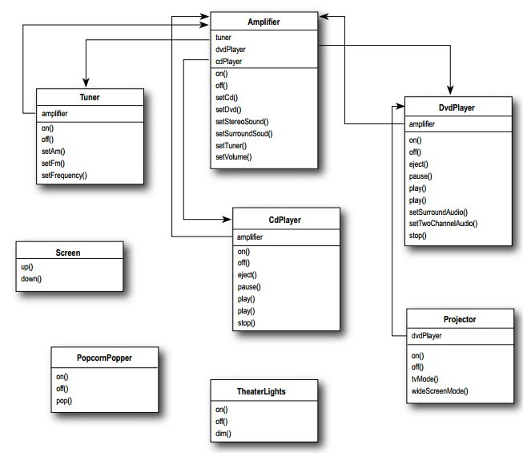
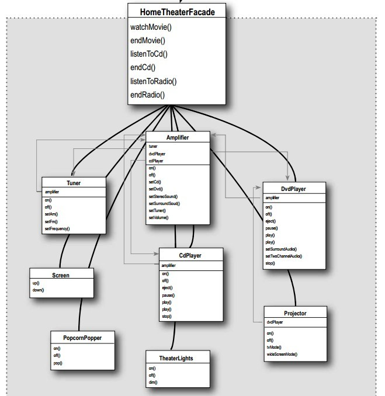
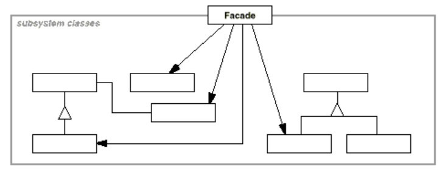

浅谈设计模式九: 外观模式(Facade)
Table of Contents
实例
在家组建了一个家庭影院，基本配置如下图。每次看电影都要进行如下一系列准备工作：
- 打开爆米花机
- 爆米花机制作爆米花
- 调暗灯光
- 投影幕布降下来
- 打开投影机
。。。等等
至少在10项的准备工作，如果每次一一去调用，非常的繁琐，那么如何让用户方便而简洁的准备看电影，并看完电影善后等活动呢？ 
外观模式(Facade)
目的
为子系统的一系列接口提供一个统一的接口。外观模式（Facade）定义一个高层接口来使子系统更易使用。
实现
建立外观类 HomeTheaterFacade ，拥有各个子系统（ Amplifier ，
Tuner 等等）的引用，创建 watchMovie ， endMovie 等函数操作，每个函数负责完成一系列对子系统的操作。代码实例在这里。
class HomeTheaterFacade { public: HomeTheaterFacade(Amplifier* amp, Tuner* tuner, DvdPlayer* dvd, CdPlayer* cd, Projector* projector, Screen* screen, TheaterLights* lights, PopcornPopper* popper); virtual ~HomeTheaterFacade(); void watchMovie(string movie); void endMovie(); void listenToCd(string cd_title); void endCd(); void listenToRadio(double frequency); void endRadio(); private: Amplifier* amp_; Tuner* tuner_; DvdPlayer* dvd_; CdPlayer* cd_; Projector* projector_; TheaterLights* lights_; Screen* screen_; PopcornPopper* popper_; }; void HomeTheaterFacade::watchMovie(string movie) { cout << "Get ready to wath a movie..." << endl; popper_->on(); popper_->pop(); lights_->dim(10); screen_->down(); projector_->on(); projector_->wideScreenMode(); amp_->on(); amp_->setDvd(dvd_); amp_->setSurroundSound(); amp_->setVolume(5); dvd_->on(); dvd_->play(movie); } void HomeTheaterFacade::endMovie() { cout << "Shutting movie theater down..." << endl; popper_->off(); lights_->on(); screen_->up(); projector_->off(); amp_->off(); dvd_->stop(); dvd_->eject(); dvd_->off(); }
总的框架如下： 
总结
外观模式(Facade)结构

组成
- 外观对象（Facade)
- 知道哪个子系统类负责哪个请求。
- 授权客户的请求给相应的子系统对象。
- 子系统类（subsystem classes）
- 实现子系统的功能。
- 处理Facade对象交托的任务。
- 对facade一点也不知道，也就是它们没有对它的引用。
应用场景
- 你想给一个复杂的子系统提供一个简单的接口。随着子系统不断扩展，它们变得越来越复杂。当大多数设计模式被应用导致越来越多的更小的类。这使得子系统更易重用和更易定制。但是对不想定制它的客户来说，它也变得更难使用。一个外观对象能提供一个简单默认的子系统外观，但也足以好对大多数客户来说。只有需要更多定制化的客户需求不满足外观对象提供的。
- 在客户和实现抽象接口的具体类之间存在很多的依赖。引入外观模式把子系统从客户和其他子系统那解藕出来，从而提高子系统的独立性和移植性。
- 你想对你的子系统分层。使用外观模式为每层子系统定义一个进入点。如果子系统是依赖的，那么你能通过使得它们之间的通信仅仅通过它们的外观对象来简化它们之间的依赖性。